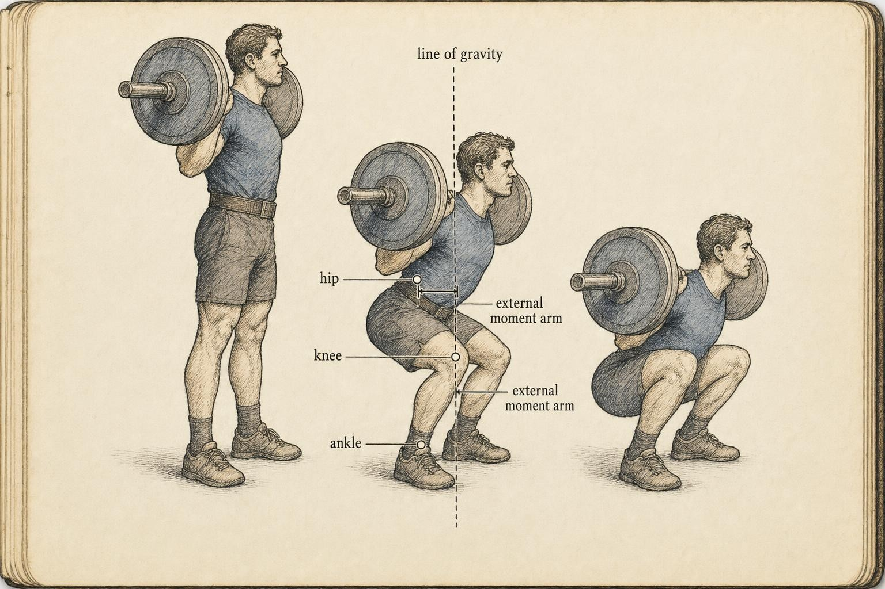
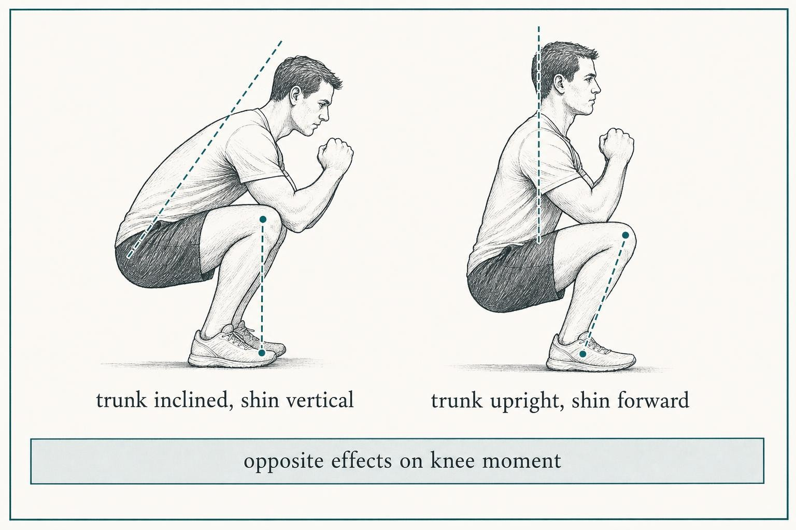

Reading a Lift: Integrating the Mechanics
Turning nine chapters of concepts into one durable skill: a way of seeing torque, leverage, and joint demand in any barbell movement.
Boone has coached the floor of the same commercial gym for six years, long enough to know the regulars by their warm-up sets. A new member named Aurelio, a former competitive strongman who moved to town for work, loads a bar for what he calls a deadlift and performs something Boone has never coached in person: a stance nearly shoulder width, shins almost vertical, torso far more upright than anything in Boone's own training log. Three repetitions in, another member leans toward Boone and asks the question this entire course has been quietly preparing an answer for. Is that even a real deadlift?
Notice what Boone does not do. Boone does not reach for a laminated poster of approved form. Boone does not silently compare Aurelio's stance against a mental photograph of what a deadlift is supposed to look like. Instead, if nine chapters have done their work, Boone begins to read. Boone locates the bar's line of gravity and tracks where it falls relative to Aurelio's hip, knee, and ankle. Boone asks where the external moment arm is longest at this specific instant, because that is where the demand is piling up. Boone checks that answer against the body actually standing at the bar: Aurelio's proportions, his ankle mobility, the shape of his particular pull. That sequence, run fluently and under real uncertainty, on a lift Boone has never personally coached, is the whole skill this course was built to install. This chapter names it, formalizes it, and puts it to work on a lift you have never seen either.
Boone is not a case to be solved and nothing about Aurelio's pull needs fixing. Boone is a stand in for the moment every learner in this course eventually faces: a body and a bar that do not match the textbook photograph, and a room full of people waiting for a confident answer. What follows is the method for earning that confidence honestly.
It is worth pausing on how far Boone has come to reach this moment, because the distance is the actual subject of this chapter. Nine chapters ago, Boone could name a lever class but could not yet say, on sight, which lever class a given repetition was demonstrating. Boone could define a moment arm on a diagram but had not yet learned to see one lengthen and shorten in real time as a hip rose out of a hole. Those were not wasted steps. They were the separate instruments a musician practices scale by scale before ever attempting to play a piece straight through. This chapter is the piece played straight through, on a lift the sheet music never printed.
From nine lenses to a single competence
Every earlier chapter in this course isolated one lens and asked you to hold still with it. In Chapter 1 we separated the joints into lever classes and asked how each class trades force for range of motion. In Chapter 2 we measured honest ranges of motion and drew a hard line between the range a joint actually has and the range a lifter merely wishes it had. In Chapter 3 we mapped muscle architecture and lines of pull onto the skeleton those levers were built from. In Chapter 4 we defined the external moment arm, the perpendicular distance from a joint's axis to the load's line of action, and set it beside its internal counterpart, the muscle's own leverage on that same axis. Chapters 5 through 8 pointed that machinery at the squat, the hinge and deadlift, the press, and the pull in turn, and Chapter 9 closed the loop with anthropometry, the segment lengths and proportions that make one person's squat geometrically incapable of resembling another's.
That isolation was necessary teaching and it was, strictly speaking, false to how a lift actually happens. No barbell movement presents one lens at a time to the person watching it. The formal machinery that lets us fuse all nine chapters back together has a name: inverse dynamics. Given the kinematics of the body's segments and the external forces acting on them, inverse dynamics solves for the net joint moment, the single number that summarizes everything the muscles crossing a joint must collectively produce to account for the motion you are watching (Winter, 2009). A laboratory arrives at that number with motion capture cameras, force plates, and a model of each segment's mass and center of mass, typically built from standardized anthropometric tables such as those refined by de Leva (1996) from earlier cadaver and imaging studies. When you read a lift on a gym floor with nothing but your eyes, you are estimating that same quantity, joint by joint, phase by phase, without the instruments. The five move framework below is nothing more than a disciplined way of making that estimate honestly, using the same variables a laboratory would use, at a coarser resolution.
This is the promise of a capstone chapter and it is worth stating plainly before we proceed. You are not about to learn a tenth topic. You are about to learn how the other nine were always one topic, viewed from nine angles, and how to collapse them back into a single working method the moment a bar leaves the floor in front of you.
It helps to see the mapping made explicit, because a reader who cannot trace each move back to a specific earlier chapter has not yet fully integrated the material, only memorized a sequence. The pattern recognition in move one draws directly on the squat, hinge, press, and pull chapters, Chapters 5 through 8, which each taught you the signature joint actions of one family of movements. The gravity line and moment arm work in moves two and three is Chapter 4 in its entirety, applied live rather than to a static diagram. The muscle matching in move four is Chapter 3's architecture and line of pull, asking which tissue is actually positioned to answer a torque rather than which tissue merely looks large on a chart. And the proportion check in move five is Chapters 2 and 9 together, honest ranges of motion meeting the anthropometry that explains why two honest ranges can still produce two different looking lifts. Nothing in the five moves is new information. What is new is the discipline of running all five, in order, on demand, without the chapter headings to prompt you.

The reading framework, in five moves
Here is the sequence, stated once and plainly, so that you can run it on anything with a bar attached to it.
1. Identify the pattern
Before measuring a single angle, classify the movement. Is this fundamentally a squat pattern, that is, knee and hip flexion under an axially loaded trunk? Is it a hinge, hip dominant with minimal knee travel? Is it a horizontal or vertical press, or a pull? Pattern recognition is the coarse filter that tells you which joints are the protagonists and roughly where load will live before you look at anything more specific. Skip this step and every later observation floats without an anchor. Aurelio's wide, upright pull is still, unmistakably, a hinge: hip dominant, minimal knee travel, load carried through the posterior chain. The stance and the torso angle are variations within the pattern, not a departure from it, and naming the pattern first is what lets Boone see that clearly instead of reacting to novelty.
2. Locate the load's line of gravity relative to each joint
Drop an imaginary plumb line from the system's center of mass. For a barbell lift, that center of mass is dominated by the bar itself. Now note, at the phase of the lift you are examining, where that line falls relative to each joint axis in the kinetic chain. A line passing in front of the knee loads the knee extensors; a line falling behind it, and the demand shifts elsewhere. This single observation does more diagnostic work than any other move in the sequence, which is why both interactive tools in this chapter begin exactly here. Everything downstream, the moment arm, the muscle, the judgment call, is built on top of this one placement.
3. Find where the external moment arm peaks
The external moment arm is the horizontal distance between that gravity line and a given joint. Torque equals force multiplied by that distance, so peak demand at a joint occurs when its moment arm is longest, and that location is almost never where a beginner assumes it will be. It changes continuously through the range of motion. Brazil and colleagues (2021) demonstrated this vividly in the barbell hip thrust: contrary to the common coaching belief that hip extensor demand stays roughly constant across the movement, their motion capture and force plate analysis of nineteen resistance trained lifters performing the hip thrust at seventy percent of one repetition maximum showed that the hip extension moment is actually greatest early in the lift and diminishes steadily as the hips rise toward lockout, because the moment arm geometry shrinks as the femur approaches horizontal. Where peak demand sits is a property of the geometry at that instant, never a property of the exercise's name.
4. Trace which muscles are best positioned to meet the demand
Having found where demand concentrates, ask which muscles cross that joint with a favorable internal moment arm and a line of pull aligned to resist the external torque you just located. This is where Chapter 3's architecture returns to do real work: a muscle with a long internal moment arm at that specific joint angle is the one nature has nominated for the job at that instant, and a muscle with a short one is a bystander no matter how large it appears on an anatomy chart. Hanen and colleagues (2025) put this to the test directly, comparing thirty experienced lifters performing conventional and sumo deadlifts at eighty five percent of one repetition maximum using fourteen motion capture cameras, dual force plates, and surface electromyography. The conventional pull's more inclined trunk lengthens the external moment arm at the hip, and the researchers measured correspondingly higher hip extension moments and greater posterior chain activation than in the sumo variant, where the wider stance and more upright trunk shifted demand toward the frontal and transverse planes at the hip and knee instead. Same load, same lifter pool, two different geometries nominating two different sets of muscles for the primary work.
5. Check the answer against proportions and honest ranges
Finally, hold your mechanical prediction up against the actual body performing the lift. Does this learner have the ankle dorsiflexion range of motion to keep the tibia traveling over the foot? Does the femur to torso ratio force a forward lean your read should already have anticipated before you ever watched a repetition? A read that ignores anthropometry predicts a lift no real person in the room can perform. A read that respects it explains why this particular person's lift looks the way it does, and, just as importantly, why it may legitimately look nothing like the photograph in a textbook without anything being wrong.
Running the five moves on a lift you have never coached
Principles are only as good as their transfer, so try the sequence once on a movement this course has never named directly: the landmine press, a diagonal press performed with one end of a barbell anchored in a floor sleeve while the free end travels along an arc in front of the shoulder. If the five moves are genuinely a method rather than a memory of nine chapters, they should produce a coherent read here without any new vocabulary.
Move one, the pattern. Despite the unfamiliar setup, this is unmistakably a press: shoulder flexion and elbow extension driving a load away from the trunk. The constraint is what differs, the bar is pinned at the floor, so the resistance travels an arc rather than a straight vertical line, closer in feel to an incline press than a strict overhead press. Move two, the gravity line. Because the bar is anchored, the meaningful line to track is not gravity acting straight down on the plate but the line of the reaction force running along the bar from the anchored end to the hand. Near the bottom of the repetition that line sits close to horizontal relative to the shoulder, which places it far from the shoulder's axis. As the arm approaches lockout, the bar arcs upward and the line closes in toward the long axis of the arm. Move three, where the moment arm peaks. It peaks early, near the bottom of the press, exactly the phase where Evangelista and colleagues (2025) located the shoulder torque threshold that governs the sticking region in other press variations. The mechanism generalizes even though the exercise does not appear in their study: a large horizontal distance between the shoulder axis and the line of resistance early in a press reliably produces the heaviest shoulder demand, whatever apparatus is producing that resistance. Move four, the muscles positioned to meet it. The anterior deltoid and the clavicular fibers of pectoralis major carry the early, horizontally loaded portion of the arc, with the triceps taking over more of the burden as the elbow finishes extending near lockout. Move five, checked against the body. A learner with long arms will feel a proportionally larger demand at a given fraction of the range, because their hand travels farther from the shoulder for the same joint angle, lengthening the external moment arm at every phase relative to a shorter armed lifter pressing the identical bar. And a learner easing back into overhead pressing after a shoulder issue is very often placed in a landmine specifically because its arc reduces the extreme end range overhead position relative to a strict press, which means the exercise choice itself may already be a form of the read, made in advance by whoever selected it.
Notice what did not happen anywhere in that paragraph. Nobody consulted a list of approved landmine press cues. Every observation followed from the same five questions asked of the wide-stance squat, the deficit deadlift, and the hip thrust earlier in this chapter. That repeatability, not the specific verdict on any one lift, is the actual skill being taught.
It is worth being honest about the limits of that same worked example, because overclaiming is exactly the habit this course has spent nine chapters training out of you. The landmine press read above is a reasoned prediction built from the same geometric logic that governs every other lift in this chapter, not a laboratory measurement. A true inverse dynamics analysis of that exercise would require motion capture, a force transducer at the anchored end of the bar, and a segment model of the specific lifter, the apparatus Winter (2009) describes and the anthropometric inputs de Leva (1996) supplies. Your eye cannot deliver that precision, and it should not pretend to. What your eye can deliver, reliably, is the correct qualitative shape of the answer: which joint is likely under the greatest demand, at roughly which phase, and why. That is a genuinely useful, genuinely different claim from a precise number, and confusing the two is its own quiet failure of scope, smaller than misreading a warning sign but a failure of the same family. A careful reader states a qualitative prediction as a qualitative prediction and leaves the decimal points to instrumentation that actually has them to give.
Peak demand is a moving target
The single most common failure of a beginning reader is to treat a lift as though it had one fixed hard part that stays put from repetition to repetition. It does not. Because the external moment arm at every joint changes continuously as the segments rotate, the location of peak demand migrates through the range of motion, and it sometimes hands off from one joint to another mid repetition without warning.
Consider the press, which Chapter 7 introduced as the most negotiated joint in the body. Evangelista and colleagues (2025) modeled the bench press and the overhead press as a kinematic chain of rigid links connected by revolute joints and showed, using single and two joint muscle representations, that the notorious sticking region, the point in the lift where bar velocity drops to a minimum and the whole system seems to stall, arises specifically when shoulder torque falls below a critical threshold at a particular configuration of that chain. Adding elbow torque at the same instant shifts the location of the minimum and partially compensates for it. The sticking region is not a fixed inch of the bar path stamped onto every press ever performed. It is a geometric event, and grip width and segment lengths relocate it. Change the grip and you change where the chain is weakest, which is exactly why two lifters pressing the same bar can stall in visibly different places without either of them doing anything wrong.
The squat tells a related story with a twist that catches many readers off guard. Straub and Powers (2024), reviewing the modifiable parameters of the squat for the International Journal of Sports Physical Therapy, make an indispensable point: trunk inclination and tibia inclination have opposite effects on the knee flexion moment. Lean the trunk forward and you unload the knee while loading the hip. Drive the tibia forward over the toes and you load the knee instead. Read either variable in isolation and you will reach the wrong conclusion, because the two routinely covary in a real repetition. A deep forward lean does not automatically mean high knee demand. You must read the shin angle at the same instant you read the trunk angle, because a lookup table cannot capture that interaction and a genuine read must.

Depth interacts with the same migrating demand in a way that Chapter 5 introduced but is worth restating here in its integrated form. As a squat descends past parallel, both the hip and knee flexion angles increase together, which lengthens the external moment arm at both joints simultaneously rather than trading demand cleanly from one to the other. This is part of why a very deep squat can feel uniformly harder rather than harder at one specific spot: the migrating peak is not relocating so much as it is spreading, taxing hip and knee extensors together near the bottom before handing off toward the hip alone on the way up. A reader who expects a single, isolated hard point in every lift will misread this pattern as confusing. A reader running the five moves simply notes that, at this phase, two joints share the peak, and adjusts the muscle-matching step accordingly, naming both the quadriceps and the glutes and hamstrings rather than forcing an artificial choice between them.
Variation versus warning sign
Once you can predict where demand concentrates, a harder and more professionally consequential question arrives. When a lift looks unusual, is that a mechanically expected consequence of this particular body's geometry, or is it a signal that warrants professional evaluation? Getting this distinction right, and staying rigorously inside your own scope while you make it, is the mark of a genuinely competent reader, and it is the reason this chapter exists as a capstone rather than a summary.
Begin with what proportions actually predict, because folklore here runs thick and confident. The reflex attribution of butt wink, meaning lumbopelvic flexion at the bottom of a squat, to long femurs is a good test case for the whole habit of mind. Berglund and colleagues (2024) studied experienced powerlifters and weightlifters squatting at seventy percent of one repetition maximum and ran regressions of lumbopelvic flexion against anthropometric measures, range of motion, and movement control tests. Femur to tibia ratio was not significantly associated with lumbopelvic flexion. The measures that did predict it were limited ankle dorsiflexion range of motion and poorer movement control. The skeletal proportions story, so confidently repeated on gym floors and in comment sections, did not survive contact with the data.
Kim and colleagues (2021) reinforce the point from another angle entirely. Across fifty three participants squatting at seventy five percent of one repetition maximum, net joint torques and flexion angles correlated more strongly with relative muscular strength and joint flexibility than with femur to tibia length ratio. Ankle dorsiflexion range of motion also showed meaningful cross joint relationships with hip mechanics, a reminder that a restriction at one joint can reshape demand at another joint some distance up the chain. When you check a read against the honest ranges of motion from Chapter 2, the ankle keeps earning its place near the top of the list, well ahead of any bone length ratio.
So a deep forward lean in a learner with long femurs, limited ankle dorsiflexion, and a wide low bar stance is not an anomaly waiting to be corrected. It is the mechanically predicted posture for that particular skeleton. Hanen and colleagues (2025), again, remind us that stance width and trunk inclination together relocate peak demand: the wider sumo style base, with its more upright trunk, shifts moment into the frontal and transverse planes at the hip and knee, while the conventional narrow, inclined pull concentrates demand in sagittal plane hip extension. Neither pattern is a flaw to be trained out of someone. They are two different geometries solving the identical mechanical task in front of them.
Over time, a reader who runs the five moves often enough stops experiencing them as five discrete steps and starts experiencing them as a single glance. This is not a shortcut around the framework, it is what fluency with the framework looks like from the outside. Boone, watching Aurelio's third repetition, is not consciously narrating gravity line, then moment arm, then muscle, then proportion, in that order, the way this chapter has laid the moves out for a first-time reader. Boone is doing all five nearly at once, the way a fluent reader of a written language does not sound out each letter before recognizing a word. That fluency is earned by repetition of the slow, explicit version first, which is exactly why this course insisted on isolating each lens for nine chapters before ever asking you to fuse them. Skip the slow version and the fast version never develops honestly. It becomes guessing dressed up as instinct, and guessing dressed up as instinct is precisely what produces the confident, ungrounded verdicts this chapter has been warning against.
Where the referral line actually sits
Be precise about your scope here, because this is the exact place where an overconfident reader does real harm. Reading a lift lets you say where a movement is mechanically demanding and why it looks the way it does. It does not, under any circumstance, license a diagnosis. A feature warrants professional evaluation not because it deviates from a picture in a textbook, but when it carries markers outside the mechanical story altogether: pain that tracks the movement, a sudden loss of control that was not present before, numbness or a giving way sensation, an asymmetry that appears only on one side and worsens across sets, or a change a learner cannot influence with cueing or a load adjustment. Those are signs that warrant professional evaluation, reasons to point someone toward a qualified clinician, never labels you apply yourself from the sideline.
Scope discipline is easiest to describe and hardest to practice in the moment someone is looking directly at you for an answer. A learner who has just watched Boone read Aurelio's pull correctly will, understandably, extend that trust to the next question, which might be about a twinge they noticed in their own low back last week. The honest response holds the line without dismissing the concern: the mechanics can explain why a given position loads a given tissue more or less, and that explanation is genuinely useful, but a twinge is a symptom, not a geometry problem, and symptoms belong with a clinician who can examine the actual tissue rather than infer its condition from the outside of a repetition. Confusing the two is not a small error. It is the exact error the wider fitness industry makes constantly, treating mechanical fluency as though it were medical authority, and it is the error this course has asked you to refuse from its very first chapter.
And screening tools do not rescue a reader from this judgment either. The temptation, understandably, is to reach for a standardized battery and let a cutoff score make the call for you. Bonazza and colleagues (2017) pooled eleven reliability studies and nine injury prediction studies of the Functional Movement Screen and found respectable inter-rater and intra-rater reliability, with an intraclass correlation of 0.81, and that learners scoring at or below fourteen carried nearly three times greater odds of injury than those scoring above it. But the same meta-analysis flagged serious concerns about the internal and external validity of the underlying studies. A screen can be reliable and still be a weak predictor for the specific person standing in front of you. It informs your read. It cannot replace it. The judgment stays with you, exercised entirely in the language of mechanics and bounded by an honest sense of what a lift's appearance does and does not reveal.
Transfer: the point of the whole thing
The reason this course insisted on principles rather than a catalog of approved lifts is transfer. A lookup table fails the instant someone performs a movement that is not in the table, which, on a real gym floor, is most of the time. A framework does not fail there. It engages there, precisely because it was never built around a fixed list of exercises in the first place. Confronted with a Jefferson deadlift, a Zercher squat, a landmine press, or some hybrid a learner invented last week without asking anyone's permission, you run the same five moves. Identify the pattern. Drop the gravity line. Find the longest moment arm. Name the muscles positioned to meet it. Check the whole prediction against the body actually in front of you. The lift can be genuinely novel and your read is still valid, because torque does not care whether you personally have seen this exercise before.
You may recall Delphine from Chapter 4, who had spent months adding accessory work for her lower back because the first few inches of her deadlift felt disproportionately brutal, without ever locating the actual source of that demand. Her chapter modeled the first three moves of this framework in miniature: identify where the moment arm was longest, locate it correctly at the joint actually under strain, and let that observation redirect her training rather than her assumption. This chapter is what happens when that same small act of reading is generalized into a habit you can run on any bar, any body, and any pattern, not just the one exercise a single chapter happened to be teaching.
This is what it means to hold a predictive working model rather than a descriptive one. The formal apparatus, the net joint moment, the external and internal moment arms, the segment anthropometry, belongs to Winter (2009) and to the biomechanists who followed, and it is exactly the same mathematics whether a laboratory computes it from marker trajectories and force plates or you estimate it by eye on a gym floor. Your estimate is coarser. It is still the same quantity, reasoned about in the same currency, and that shared currency is the durable takeaway of the entire course. Not a set of postures to enforce on every body that walks in the door. A way of seeing that travels with you after the course itself has ended.
And it is a way of seeing that knows its own edges, which is the other half of what makes it professional rather than merely clever. When you read a lift well, you can say with real confidence why it looks the way it does and where its demand lives at each phase. You can also say, just as confidently, what its appearance does not tell you: that mechanics explain shape and load, not tissue health, and that the honest response to a genuine sign that warrants professional evaluation is a referral, never a verdict delivered from the sideline. Holding both of those at once, the analytic reach and the disciplined scope, is what separates a technician who has memorized a catalog of approved forms from a professional who actually understands movement.
If you want a practice protocol for keeping the skill sharp after this course ends, it is simple and it asks nothing you have not already done in this chapter. Watch a lift, any lift, at a gym, in a video, in a competition stream, and before anyone tells you anything about it, run the five moves out loud. Name the pattern. Find the gravity line. Predict where the moment arm peaks and when that peak might migrate. Name the muscles you expect to be working hardest at that instant. Check your whole prediction against whatever you can see of the lifter's proportions and their range of motion. Then, and only then, compare your read against what a coach, a commentator, or the lifter themselves says about the experience. Where you disagree, ask why, honestly, rather than assuming the expert is automatically right or automatically wrong. That loop, repeated across enough unfamiliar lifts and enough unfamiliar bodies, is what turns a five-step checklist into the instinct Boone was running on Aurelio's third repetition. Nothing about that instinct is mystical. It is nine chapters of deliberate practice, compressed into a glance.
The location of peak demand is a property of the geometry, not of the exercise's name. Learn to see the geometry, and every lift you will ever meet is already partly read.
The organizing idea of this course
Key Takeaways
- Reading a lift is one integrated skill: identify the pattern, locate the load's gravity line at each joint, find where the external moment arm peaks, trace the best-positioned muscles, and check the prediction against proportions and honest ranges of motion.
- Peak demand migrates through the range and can hand off between joints. The hip thrust's hip moment diminishes toward lockout (Brazil et al., 2021), and the press's sticking region is a geometric event that grip width and segment length relocate (Evangelista et al., 2025).
- Variables interact rather than acting alone: trunk and tibia inclination move the knee moment in opposite directions, so no single feature of a squat can be read in isolation (Straub & Powers, 2024).
- Folk attributions of unusual postures to skeletal proportions often fail to hold up empirically. Ankle dorsiflexion range of motion, not femur ratio, predicts lumbopelvic flexion (Berglund et al., 2024; Kim et al., 2021).
- Distinguish expected variation from a sign that warrants professional evaluation by markers outside the mechanical story: pain, sudden loss of control, worsening asymmetry. Treat those as referral cues, never as diagnoses, and remember that screening scores inform this judgment but cannot replace it (Bonazza et al., 2017).
- The framework transfers to lifts you have never personally seen, because the underlying quantity, the net joint moment, is the same mathematics whether it is measured in a laboratory or estimated by eye (Winter, 2009; de Leva, 1996).
This is the capstone of the course, but the skill it names is never finished. Every unfamiliar body and every invented variation you meet from here forward is simply another repetition of the read. Carry the five moves onto the gym floor. Run them out loud until they run silently in the background of whatever you are watching. And let the questions you genuinely cannot answer within mechanics become the referrals that keep you, and the learners you work with, honest.
References
Berglund, L., Aasa, U., Michaelson, P., & Aasa, B. (2024). Are anthropometric measures, range of motion, or movement control tests associated with lumbopelvic flexion during barbell back squats? International Journal of Sports Physical Therapy, 19(9), 1097-1107. https://doi.org/10.26603/001c.122637
Bonazza, N. A., Smuin, D., Onks, C. A., Silvis, M. L., & Dhawan, A. (2017). Reliability, validity, and injury predictive value of the Functional Movement Screen: A systematic review and meta-analysis. The American Journal of Sports Medicine, 45(3), 725-732. https://doi.org/10.1177/0363546516641937
Brazil, A., Needham, L., Palmer, J. L., & Bezodis, I. N. (2021). A comprehensive biomechanical analysis of the barbell hip thrust. PLOS ONE, 16(3), e0249307. https://doi.org/10.1371/journal.pone.0249307
de Leva, P. (1996). Adjustments to Zatsiorsky-Seluyanov's segment inertia parameters. Journal of Biomechanics, 29(9), 1223-1230. https://doi.org/10.1016/0021-9290(95)00178-6
Evangelista, P., Rum, L., Picerno, P., & Biscarini, A. (2025). Decoding the contribution of shoulder and elbow mechanics to barbell kinematics and the sticking region in bench and overhead press exercises: A link-chain model with single- and two-joint muscles. Journal of Functional Morphology and Kinesiology, 10(3), 322. https://doi.org/10.3390/jfmk10030322
Hanen, N. C., Ben Mansour, K., Ertel, G., Duchene, Y., & Gauchard, G. C. (2025). Biomechanical analysis of conventional and sumo deadlift. Frontiers in Bioengineering and Biotechnology, 13, 1597209. https://doi.org/10.3389/fbioe.2025.1597209
Kim, S., Miller, M., Tallarico, A., Helder, S., Liu, Y., & Lee, S. (2021). Relationships between physical characteristics and biomechanics of lower extremity during the squat. Journal of Exercise Science & Fitness, 19(4), 269-277. https://doi.org/10.1016/j.jesf.2021.09.002
Straub, R. K., & Powers, C. M. (2024). A biomechanical review of the squat exercise: Implications for clinical practice. International Journal of Sports Physical Therapy, 19(4), 490-501. https://doi.org/10.26603/001c.94600
Winter, D. A. (2009). Biomechanics and motor control of human movement (4th ed.). Wiley.